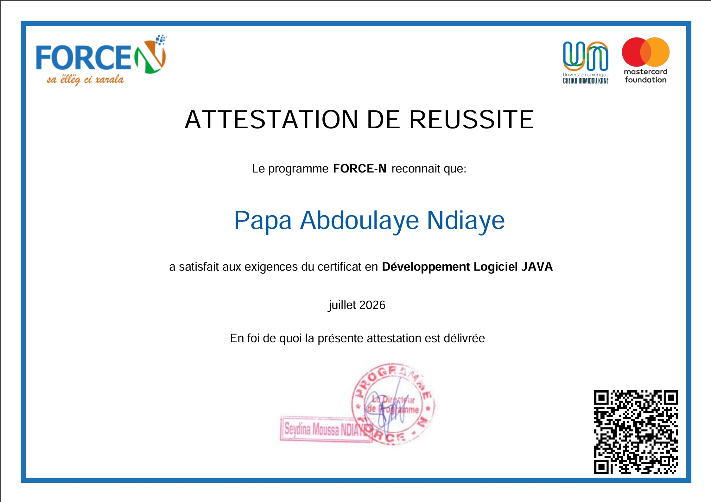

Papa Abdoulaye Ndiaye, alias L@yeTech — étudiant en Master 2 Génie Logiciel et Gestion de Données à l'Université Gaston Berger. Je conçois des applications web, mobiles et des architectures backend, avec un intérêt particulier pour l'IA et les modèles de langage.
Un cursus construit à l'Université Gaston Berger, de la base scientifique à la spécialisation en ingénierie logicielle.
Mathématiques, physique et informatique — les fondamentaux scientifiques qui ont posé les bases de mon parcours en ingénierie.
Spécialisation en informatique, orientée Gestion de Données et Ingénierie Logicielle. Approfondissement du développement web, mobile et des architectures backend.
Approfondissement en data mining, text mining et perceptron multicouche, avec une exploration des Large Language Models (LLM) et du prompt engineering. Passionné par l'IA appliquée à des problèmes concrets.
Des projets personnels au service de la fibre entrepreneuriale et de la promotion du patrimoine sénégalais dans la tech.
Plateforme multi-rôles de tourisme et d'artisanat sénégalais. Frontend Angular (composants standalone), backend Spring Boot / JPA / PostgreSQL, authentification et gestion des rôles (Touriste, Artisan, Prestataire, Administrateur) via Keycloak.
Système de surveillance de carburant et de suivi GPS de flotte de véhicules basé sur l'IoT, pensé pour la gestion en temps réel d'un parc de véhicules.
Refonte progressive d'un monolithe Spring Boot (tourisme_api, ~15 modules métier) vers une architecture en six microservices : clients, produits, tourisme, réservation, paiement et notification.
Conception d'une API REST sécurisée avec authentification basée sur JWT et gestion des identités via Keycloak, consommée par un frontend Angular.
Backend PHP pour la gestion des inscriptions et des utilisateurs, avec intégration d'une base de données MySQL.
Application mobile avec authentification, publication d'annonces et gestion des utilisateurs.
Application desktop avec interface graphique pour la gestion d'un parc de véhicules.
Du frontend à l'IA, avec une base solide en architecture et en sécurité.
Des parcours pratiques qui complètent ma formation académique par une expérience hands-on.

Un programme axé sur la pratique, qui m'a permis de renforcer mes compétences en Java et Spring Boot, de concevoir des API REST, de sécuriser des applications avec Keycloak et de manipuler des bases de données SQL — le tout à travers la construction d'applications sécurisées et scalables.
Ouvert aux opportunités de stage ou de collaboration autour du développement logiciel et de l'IA.